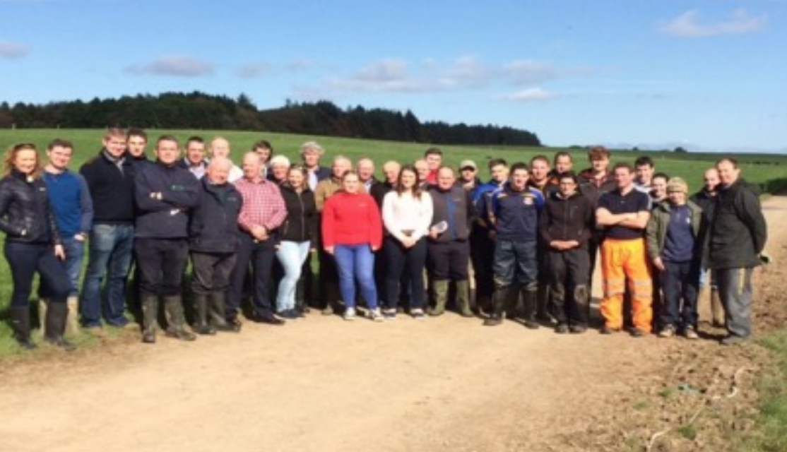

Field Trips
Visit of Finland Farmers
5/4/2017 - 6/4/2017
Stakeholders:Farmer discussion group from Finland, Growers
A presentation was made to this Finnish group of farmers and growers with respect to land drainage research in Ireland. As part of this presentation and discussion the Inspiration ITN project was show cased and a visit was conducted to the dairy farm. The group was very interested in design and land drainage remediation
Crops Nutrition Course Module on Land Drainage
11/10/2017
Stakeholders:Advisor, farmers
Diverse group of advisors (private and Teagasc), farmers and professionals attend this course every year and Owen Fenton takes the land drainage component. On this occasion the group were taken to see the Inspiration ITN site where unsaturated zone gases are being examined in collaboration with UFZ in Germany.
